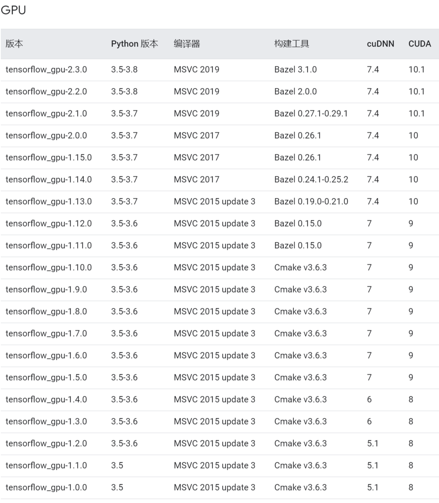
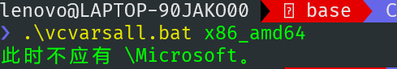

我安装openpose的过程主要参考了以下两篇文章：
win10下openpose安装与使用
Win10+Tensorflow+OpenPose超超超详细安装及各种遇到的问题解决
其中第二篇文章记录了大部分可能遇到的问题，不过我安装时还遇到了一些额外的问题，记录如下：
TensorFlow和CUDA
关于tensorflow的版本的问题比较多，首先openpose是依赖tensorflow的1.x版本的，和tensorflow 2.x版本不能兼容，所以安装tensorflow时要注意只能安装tensorflow 1.x版本。
另外，CUDA和tensorflow-gpu的版本要求对应的很严格，可能差几个版本号就没法正常运行了。这里可以参照tensorflow官网的对应表。

按照上面的对应表，CUDA 10.0以上的版本就没有测试过tensorflow 1.x了，但我意识到这个问题时已经装好了CUDA 10.1，试了一下别的教程中用过的配置，发现CUDA 10.1也是可以用的。最终我的成功配置是CUDA 10.1+cuDNN 8.0.5+python 3.6.8+tensorflow-gpu 1.15.0。
pycocotools
安装依赖包的pycocotools时，在conda环境中使用pip install pycocotools是会报错，提示需要安装Microsoft Visual C++ 14.0。我安装了VC 14.0之后还是报相同的错，但是退出conda环境之后就可以安装了。这个有点玄学，我也没查到编译python库是要依赖哪个环境变量，于是后面的操作都是关闭conda环境进行的。
编译
最后在使用python setup.py build_ext --inplace安装openpose时，报错：
1 | error: Error executing cmd /u /c C:\Program Files (x86)\Microsoft Visual Studio\2019\Community\VC\Auxiliary\Build\vcvarsall.bat x86_amd64 && set |
直接查这个报错信息没查出来怎么解决，可以看到错误是在执行vcvarsall.bat时出现的，单独运行一下这个脚本，会出现报错：

查一下这个报错信息，发现了这篇文章。按照其中的解决方法，找出来环境变量中所有带双引号的变量（不只是PATH，我的情况是变量LIB和INCLUDE带了双引号），把双引号去掉，就可以正常编译安装了。